Usage
Open the History
Ctrl+Shift+O opens it as a popup in any layout, and again closes it. In a layout with the History panel, it is also there.

The window

- Header: the save's date and time, how long ago, its counts (tabs, each agent, programs) and how it differs from now:
+2 tabs +1 space 1 to restart. - Restore, Pin and Events sit right under it. Events lists what changed since the save before.
- Search: type part of a conversation's name, a tab, a space or a folder; it jumps to the newest save that has it.
- Timeline: the activity strip shows how busy each moment was; a red
▲marks a restart of Herdr's terminal service (a reboot, a crash, a logout). The slider snaps to saves: the last hours get most of its width. ← → step one save, Shift with them a day. "Before restart" buttons jump to the last save before each restart. - Tree: a card per space with its tabs and panes. A mark shows where a pane differs from now:
↻can restart in place,~runs something else now,+was closed since. Click a pane for its folder, branch and, for an agent, its conversation.
Going back in time
Drag the slider, or press ←, and the whole window shows that save: its date, its counts, and every pane compared with what runs now.

Restore
Every pane that can restart and every closed tab has a tick box; untick what you don't want. Restore types a restart line into panes that are now a bare shell, and rebuilds closed tabs (and spaces) with their panes. It never closes or replaces what runs now.

After a reboot or crash
When Herdr's terminal service has started again since the last save, session-restore takes the last save from before that start and restarts what ran in each pane that is now a bare shell: agents by their conversation id, and programs on the allowlist. Closed tabs are not rebuilt on their own; that is what the History is for. One notification says what came back, and lists any command it left alone.